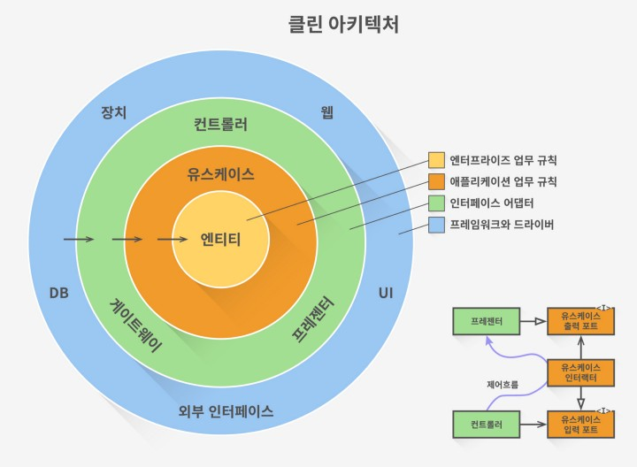

Table of Contents
Badges
Introduction
디자인 패턴에 대한 스터디 내용을 하나씩 정리하기 위한 프로젝트입니다.
구현된 패턴들
- [ ] Creational patterns
- [X] Abstract factory
- [X] Builder
- [ ] Dependency injection
- [ ] Factory method
- [ ] Multiton
- [ ] Object pool
- [ ] Prototype
- [ ] Resource acquisition is initialization
- [ ] Singleton
- [ ] Structural patterns
- [ ] Adapter(Wrapper, translator)
- [ ] Bridge
- [ ] Composite
- [X] Decorator
- [ ] Extension object
- [ ] Facade
- [ ] Front controller
- [ ] Marker
- [ ] Module
- [ ] Proxy
- [ ] Twin
- [ ] Behavioral pattern
- [ ] Blackboard
- [ ] Chain of responsibility
- [ ] Command
- [ ] Interpreter
- [ ] Iterator
- [ ] Mediator
- [X] Memento
- [ ] Null object
- [X] Observer (or Publish/subscribe)
- [ ] Servant
- [ ] Specification
- [ ] State
- [ ] Strategy
- [X] Template method
- [ ] Visitor
- [ ] Fluent Interface
- [ ] Concurrency pattern
- [ ] Activate object
- [ ] Balking
- [ ] Binding properties
- [ ] Compute kernel
- [ ] Double-checked locking
- [ ] Event-based asynchronous
- [ ] Guarded suspension
- [ ] Join
- [ ] Lock
- [ ] Messaging design pattern(MDP)
- [ ] Monitor object
- [ ] Reactor
- [ ] Read-write lock
- [ ] Scheduler
- [ ] Thread pool
- [ ] Tread-specific storage
- [ ] Safe Concurrency with Exclusive Ownership
- [ ] CPU atomic operation
- [ ] ETC
- [ ] Model-View-Controller
Note
클린 아키텍처
클린 아키텍처란 설계의 철학과 원칙, 그리고 아키텍처 청사진의 관점에서 볼수 있습니다. 설계의 철학과 원칙에는 OOP를 대표하는 5가지 원칙을 중심으로 설명하고 있습니다. 5가지 원칙은 다음과 같습니다.
- Single responsibility principle: 한 클래스는 하나의 책임만 갖는다.
- Open-Close principle: 소프트웨어 요소는 확장에는 열려있으나, 변경에는 닫혀있어야 한다.
- Lizkov substitution principle: 프로그램의 객체는 프로그램의 정확성을 깨뜨리지 않으면서 하위 타입의 인스턴스로 바꿀 수 있어야 한다. (계약에 의한 설계를 참고)
- Interface segregation principle: 특정 클라이언트를 위한 인터페이스 여러 개가 범용 인터페이스 하나보다 낫다.
- Dependency inversion principle: 프로그래머는 추상에 의존해야지 구체화에 의존하면 안된다. 의존성 주입은 이 원칙을 따르는 방법 중 하나이다.
아키텍처의 청사진은 아래의 그림이 대표적입니다.  위 그림에서 가운데로 갈 수록 높은 수준, 바깥으로 갈 수록 낮은 수준의 컴포넌트이다. 이에 대한 효율적인 분리를 통해 효과적인 설계가 가능하다.
클린 아키텍처가 주는 영감은 다음과 같습니다.
- 경계선: 계층 구조의 개념이 널리 적용됨
- 유스케이스: 도메인 계층의 분리로 소스코드 변경 안정성이 높아짐
- 험블 객체: 프리젠테이션 계층의 테스트 가능성, 가독성, 유지보수성을 향상시킴
- 의존선 역정: 모듈러한 프로젝트 구조의 확산
아키텍처 패턴의 종류
Layered pattern
N-티어 아키텍처 패턴이라고도 불린다. 하위 모듈들의 그룹으로 나눌 수 있는 구조화된 프로그램에서 주로 사용한다. 각 하위 모듈은 특정한 수준의 추상화를 제공한다. 각 계층은 다음 상위 계층에 서비스를 제공한다.
- 활용
- 일반적인 데스크톱 애플리케이션
- E-commerce 웹 매플리케이션
Client-server pattern
하나의 서버와 다수의 클라이언트, 두 부분으로 구성된다. 서버 컴포넌트의 다수의 클라이언트 컴포넌트로 서비스를 제공한다. 클라이언트가 서버에 서비스를 요청하면 서버는 클라이언트에게 적절한 서비스를 제공한다. 또한 서버는 계속 클라이언트로부터의 요청을 대기한다.
- 활용
- 이메일, 문서 공유 및 은행 등의 온라인 애플리케이션
Master-slave pattern
마스터와 슬레이브, 두 부분으로 구성된다. 마스터 컴포넌트는 동등한 구조를 지닌 슬레이브 컴포넌트들로 작업을 분산하고, 슬레이브가 반환한 결과값으로부터 최종 결과값을 계산한다.
- 활용
- 데이터베이스 복제에서 마스터 데이터베이스는 신뢰할 수 있는 데이터 소스로 간주되며, 슬레이브 데이터베이스는 마스터 데이터베이스와 동기화
- 컴퓨터 시스템에서 버스와 연결된 주변장치
Pipe-filter pattern
데이터 스트림을 생성하고 처리하는 시스템에서 사용할 수 있다. 각 처리 과정은 필터 컴포넌트에서 이루어지며, 처리되는 데이터는 파이프를 통해 흐른다. 이 파이프는 버퍼링 또는 동기화 목적으로 사용될 수 있다.
- 활용
- 컴파일러. 연속한 필터들은 어휘 분석, 파싱, 의미 분석, 그리고 코드 생성을 수행
- 생물 정보학에서의 워크플로우
Broker pattern
분리된 컴포넌트들로 이루어진 분산 시스템에서 사용된다. 이 컴포넌트들은 원격 서비스 실행을 통해 서로 상호 작요 할 수 있다. 브로커 컴포넌트는 컴포넌트간의 통신을 조정하는 역할을 한다.
- 활용
- Apache ActiveMQ, Apache Kafka, RabbitMQ 및 JBoss Messaging와 같은 메시지 브로커 소프트웨어
Peer-to-peer pattern
각 컴포넌트들을 피어라 부른다. 피어는 클라이언트로서 피어에게 서비스를 요청할 수 있고, 서버로서 각 피어에게 서비스를 제공할 수 있다. 피어는 클라이언트 또는 서버 혹은 둘 모두로서 동작할 수 있으며, 시간이 지남에 따라 역할이 유동적으로 바뀔 수 있다.
- 활용
- Gnutella나 G2와 같은 파일 공유 네트워크
- P2PTV나 PDTP와 같은 멀티미디어 프로토콜
- Spotify와 같은 독점적 멀티미디어 애플리케이션
Event-bus pattern
이 패턴은 주로 이벤트를 처리하며 이벤트 소스, 이벤트 리스너, 채널, 그리고 이벤트 버스의 4가지 주요 컴포넌트들을 갖는다. 소스는 이벤트 버스를 통해 특정 채널로 메시지를 발행하며, 리스너는 특정 채널에서 메시지를 구독한다. 리스너는 이전에 구독한 채널에 발행된 메시지에 대한 알림을 받는다.
- 활용
- 안드로이드 개발
- 알림 서비스
MVC pattern
대화형 애플리케이션을 다음의 세 부분으로 나눈다.
- Model: 핵심 기능과 데이터를 포함
- View: 사용자에게 정보를 표시 (하나 이상의 뷰가 정의될 수 있음)
- Controller: 사용자로부터의 입력을 받음
정보가 사용자에게 제공되는 방식과 사용자로부터 받아 들여지는 방식에서 정보의 내부적인 표현을 분리하기 위해 나누어진다. 이는 컴포넌트를 분리하며 코드의 효율적인 재사용을 가능케 한다.
- 활용
- 일반적인 웹 애플리케이션 설계 아키텍처
- Django나 Rails와 같은 웹 프레임워크
Backboard pattern
결정 가능한 해결 전략이 알려지지 않은 문제에 유용하다. 이 패턴은 3가지 주요 컴포넌트로 구성된다.
- Blackboard: 솔루션의 객체를 포함하는 구조화된 전역 메모리
- Knowledge source: 자체 표현을 가진 특수 모듈
- Control component: 모듈 선택, 설정 및 실행을 담당
모든 컴포넌트는 Blackboard에 접근한다. 컴포넌트는 Blackboard에 추가되는 새로운 데이터 객체를 생성할 수 있다. 컴포넌트는 Blackboard에서 특정 종류의 데이터를 찾으며, 기존의 knowledge source와 패턴 매칭으로 데이터를 찾는다.
- 활용
- 음성 인식
- 차량 식별 및 추적
- 단백질 구조 식별
- 수중 음파 탐지기 신호 해석
Interpreter pattern
특정 언어로 작성된 프로그램을 해석하는 컴포넌트를 설계할 때 사용된다. 이는 주로 특정 언어로 작성된 문장 혹은 표현식이라고 하는 프로그램의 각 라인을 수행하는 방법을 지정한다. 기본 아이디어는 언어의 각 기호에 대해 클래스를 만드는 것이다.
- 활용
- SQL과 같은 데이터베이스 쿼리 언어
- 통신 프로토콜을 정의하기 위한 언어
전체 비교
| 아키텍쳐 | 장점 | 단점 | |
|---|---|---|---|
| 1 | 계층식 (Layered) | 하위 레이어는 다른 상위 레이어에 의해 사용된다. 레이어 표준화가 쉬우며 레이어 수준을 정의하기가 수월하다. 레이어를 변경해도 다른 레이어에는 영향을 끼치지 않는다. | 광범위한 적용이 어렵다. 특정 상황에서는 특정 레이어가 불필요할 수도 있다. |
| 2 | 클라이언트-서버 (Client-server) | 클라이언트가 요청할 수 있는 일련의 서비스를 모델링 할 수 있다. | 요청은 일반적으로 서버에서 별도의 스레드로 처리된다. 프로세스간 통신은 서로 다른 클라이언트가 서로 다르게 표현되므로 오버헤드가 발생한다. |
| 3 | 마스터-슬레이브 (Master-slave) | 정확성 - 서비스의 실행은 각기 다른 구현체를 가진 슬레이브들에게 전파된다. | 슬레이브가 독립적이므로 공유되는 상태가 없다. 실시간 시스템에서는 마스터-슬레이브간 레이턴시 문제가 발생할 수 있다. 이 패턴은 분리 가능한 문제에만 적용할 수 있다. |
| 4 | 파이프-필터 (Pipe-filter) | 동시성 처리를 나타낸다. 입출력이 스트림으로 구성되고 필터가 데이터를 수신하면 연산을 수행하기 시작한다. 필터 추가가 쉽다. 시스템 확장성이 좋다. 필터는 재사용 가능하다. 주어진 필터들을 재구성하여 또 다른 파이프라인을 구축할 수 있다. | 가장 느린 필터 연산에 의해 효율성이 제한될 수 있다. 필터간 데이터 이동에서 데이터 변환 오버헤드가 발생한다. |
| 5 | 브로커 (Broker) | 객체의 동적인 변경, 추가, 삭제 및 재할당이 가능하며 개발자에게 배포를 투명하게 만든다. | 서비스 표현에 대한 표준화가 필요하다 |
| 6 | 피어 투 피어 (Peer to peer) | 탈중앙화된 컴퓨팅을 지원한다. 특정 노드 장애에 매우 강하다. 리소스 및 컴퓨팅 성능면에서 확장성이 뛰어나다. | 노드들이 자발적으로 참여하기 때문에 서비스 품질에 대한 보장이 어렵다. 보안에 대한 보장이 어렵다. 노드의 갯수에 따라 성능이 좌우된다. |
| 7 | 이벤트-버스 (Event-bus) | 새로운 발행자 (publishers)와 구독자 (subscribers) 및 연결의 추가가 수월하다. 고도로 분산화된 애플리케이션에 효과적이다. | 모든 메시지가 동일한 이벤트 버스를 통해 전달되기 때문에 확장성 문제가 발생할 수 있다. |
| 8 | 모델-뷰-컨트롤러 (MVC) | 동일한 모델에 대해 여러개의 뷰를 만들 수 있으며, 런타임에 동적으로 연결 및 해제를 할 수 있다. | 복잡성을 증가시키며, 사용자의 행동에 대한 불필요한 업데이트가 많이 발생할 수 있다. |
| 9 | 블랙보드 (Blackboard) | 새로운 애플리케이션을 쉽게 추가할 수 있다. 데이터 공간의 구조를 쉽게 확장할 수 있다. | 모든 애플리케이션이 영향을 받기 때문에 데이터 공간의 구조를 변경하기가 어렵다. 동기화 및 접근 제어가 필요할 수 있다. |
| 10 | 인터프리터 (Interpreter) | 매우 동적인 설계가 가능하다. 최종 사용자가 프로그래밍하기 좋다. 인터프리터 프로그램을 쉽게 교체할 수 있기 때문에 유연성이 향상된다. | 인터프리터 언어는 일반적으로 컴파일 언어보다 느리기 때문에 성능 문제가 발생할 수 있다. |
아키텍처와 디자인 패턴의 차이
Differences between Architecture and design pattern
- 아키텍처:
- 아키텍처는 소프트웨어의 전체적인 구조
- 아키텍처는 소프트웨어 시스템의 내부의 전체 구조
- 개발자는 아키텍처의 사양 및 요구 사항에 따라 다른 디자인 패턴을 선택 할 수 있음
- 구성 요소의 세분성을 정의
- 디자인 패턴:
- 디자인 패턴은 구성 요소가 구축되는 방식과 관련
- 구체적인 솔루션
- 차이점:
- 아키텍처는 설계 단계에 시작되고, 디자인 패턴은 구축 단계에 시작
- 아키턱처적인 패턴은 청사진과 같고, 디자인 패턴은 실제 구현
- 아키텍처는 모든것이 준수하는 기반, 디자인 패턴은 일반적인 문제를 풀기위한 클래스를 구성하는 방법
- 모든 아키텍처는 디자인 패턴이지만, 모든 디자인 패턴은 아키텍처가 될 수 없음(MVC 패턴은 아키텍처이자 디자인 패턴이지만, 싱글톤은 아키텍처가 아님)
- 아키텍처는 구성요소들이 시스템 안에서 어떻게 동작하고 통신해야만 하는지에 따라 구성요소들의 물리적인 위치를 설정하고, 생성된 구성 요소들에 따라 도구를 선택
- 아키텍처가 큰 그림을 보는 동안, 디자인 패턴은 확실한 구성 요소의 구현과 관련된 디테일한 부분을 팜